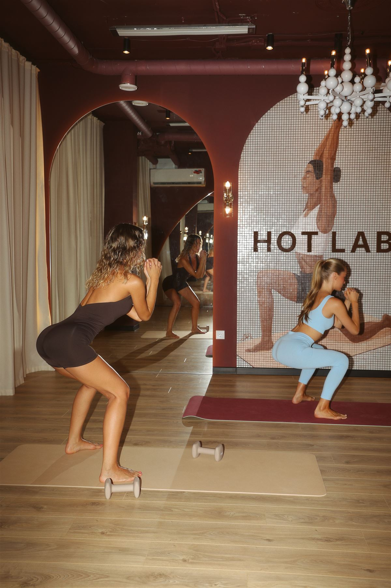

Горячая йога в Казани — тренировка для гибкости, тонуса тела и восстановления нервной системы в прогретом до 36° зале HOT LAB.
Горячая йога 36° в HOT LAB подходит и новичкам, и тем, кто уже практикует йогу. Тепло в зале помогает мышцам и связкам мягче раскрываться, поэтому растяжка даётся легче и безопаснее, чем в холодном помещении. Занятие хорошо снимает накопленное за день напряжение, помогает восстановиться после силовых тренировок и наладить сон. Обзор всех форматов йоги в HOT LAB — на странице «Йога в Казани».
Горячую йогу в Казани часто ищут те, кто хочет совместить физическую нагрузку с расслаблением — формат снимает и телесное, и эмоциональное напряжение за одну тренировку, что особенно ценно при высоком уровне стресса и сидячей офисной работе.
Разница не в самих асанах, а в условиях, в которых они выполняются. При температуре около 36° тело разогревается быстрее, мышцы и связки становятся более пластичными, поэтому глубокие растягивающие позы даются легче и с меньшим риском потянуть мышцу «в холодную». Дыхание в тепле тоже меняется — оно становится глубже, что усиливает расслабляющий эффект практики.
Второе отличие — интенсивность нагрузки на организм. Тепло заставляет тело активнее регулировать температуру, поэтому даже спокойная по темпу практика ощущается энергозатратнее, чем та же последовательность асан в обычном зале.
Зал прогревается до 36°, что близко к температуре тела и создаёт ощущение мягкости в движении. Практика строится как последовательность асан с акцентом на дыхание: разминка, основной блок на гибкость и баланс, финальное расслабление. Группы небольшие, тренер следит за техникой и подсказывает вариации под разный уровень подготовки.
Занятие длится около 36 минут — этого времени достаточно, чтобы тело успело прогреться, пройти через основной блок асан и восстановиться в финальном расслаблении, не переутомляясь от жары. По пятницам и понедельникам в расписании есть формат «Горячая Йога + Медитация» — тренировка дополнена короткой практикой на расслабление и концентрацию в конце занятия.

Нужны только удобная спортивная одежда, которая не сковывает движения, и полотенце — из-за температуры в зале потоотделение более активное, чем на обычной тренировке. Вода в студии есть, но лучше выпить достаточно жидкости заранее и не приходить на голодный желудок или сразу после плотного приёма пищи.
Для заметного эффекта достаточно 2 занятий в неделю. Первые улучшения — лёгкость в теле и более спокойный сон — многие замечают уже после 1–2 тренировок. Устойчивая гибкость и снижение мышечного напряжения формируются за 3–4 недели регулярной практики.
Регулярная практика горячей йоги улучшает гибкость и подвижность суставов, укрепляет мышечный корсет, снижает уровень стресса и помогает телу восстанавливаться быстрее. Многие гостьи отмечают, что после нескольких занятий легче засыпать и уходит скованность в спине и шее от сидячей работы.
Горячая йога — не кардио-тренировка в чистом виде, поэтому расход калорий за одно занятие ниже, чем на интенсивной силовой или функциональной тренировке. Но за счёт повышенной температуры тела и активной работы с мышцами энергозатраты выше, чем на обычной йоге в холодном зале. Как часть комплексного подхода — вместе со сбалансированным питанием и регулярной физической активностью — горячая йога помогает поддерживать тонус тела и создавать более подтянутый силуэт.
Горячая йога хорошо дополняет силовые и функциональные форматы: пока силовая тренировка укрепляет мышцы, йога возвращает телу подвижность и снимает накопленное напряжение. В HOT LAB многие гостьи чередуют горячую йогу с Pilates Reformer или горячим пилатесом — так за неделю получается баланс между силовой нагрузкой и восстановлением. Абонемент «Смешанные направления HOT/COLD» позволяет комбинировать холодные и горячие групповые направления студии по одному общему пакету занятий.
«Чем больше потеешь — тем лучше эффект». Потоотделение — это механизм терморегуляции тела, а не показатель «сожжённых токсинов» или эффективности тренировки. Главный результат даёт сама физическая работа мышц, а не количество пота.
«Горячая йога — это то же самое, что баня с растяжкой». На деле температура зала (36°) значительно ниже, чем в бане или сауне, и близка к температуре тела — цель не «пропарить» организм, а создать комфортные условия для более глубокой и безопасной растяжки.
«Подходит только тем, кто уже гибкий». Наоборот — именно тепло облегчает вход в растяжку тем, кому обычно сложно расслабить мышцы и связки в холодном зале, поэтому формат особенно удобен для новичков.
Если вы никогда не занимались йогой, начинать сразу с горячего формата — нормально: тепло облегчает вход в непривычные позы, а тренер объяснит базовые принципы дыхания и техники прямо на первом занятии. Не нужно уметь садиться на шпагат или тянуться руками к полу — асаны всегда даются с вариациями под разный уровень гибкости, а прогресс в горячей йоге происходит именно за счёт регулярности, а не изначальной растяжки.
Из-за тепла в зале горячая йога подходит не всем. Перед записью проконсультируйтесь с врачом, если у вас есть:
Свободные места проверяйте в онлайн-записи — расписание может меняться от недели к неделе. Полное расписание и цены →
Горячая йога — групповое направление, оплачивается по общему абонементу на горячие занятия:
«Дважды приходила на хот йогу, каждый раз выхожу новым человеком, преподаватель подстраивается под уровень группы и старается всем помогать, если возникают трудности.»
Алиса Козлова
«Мы впервые в жизни попробовали hot-йогу, и это оказалось невероятно интересным опытом! Тело очень хорошо прогрелось, появилось ощущение лёгкости и приятного расслабления.»
Ева Боева
«Горячая йога и тренер Настя — это просто космос! После занятия принимаешь душ, где всё предусмотрено и ничего не нужно брать с собой.»
Юля С.
«Спасибо большое Анастасии за прекрасную горячую йогу, почувствовала себя обновлённым человеком.»
Алина Галимуллина
Отзывы — с карточки HOT LAB в Яндекс Картах.
В HOT LAB зал прогревается примерно до 36° — это близко к температуре тела. Такая температура помогает мышцам и связкам мягче раскрываться, но переносится комфортнее, чем очень жаркие форматы.
Перед занятиями в тёплом зале нужно посоветоваться с врачом при беременности, сердечно-сосудистых заболеваниях и гипертонии, нарушениях терморегуляции, эпилепсии, острых воспалениях и повышенной температуре тела, после недавних операций и травм.
Удобную одежду, которая не сковывает движения. Коврики, полотенца, вода, душевые и средства ухода есть в студии. Выпейте воды заранее и не ешьте плотно за пару часов до практики.
Плюсы: в тепле мышцы быстрее разогреваются, растяжка даётся мягче, практика хорошо расслабляет и помогает восстановиться после нагрузок. Минусы: тепло подходит не всем — при некоторых заболеваниях и плохой переносимости жары формат противопоказан, а в первое время нужно привыкнуть к температуре и следить за питьевым режимом.
Да. Тренер показывает упрощённые варианты асан и подстраивает занятие под уровень группы. Главное — двигаться в комфортном темпе и сообщать тренеру о самочувствии.